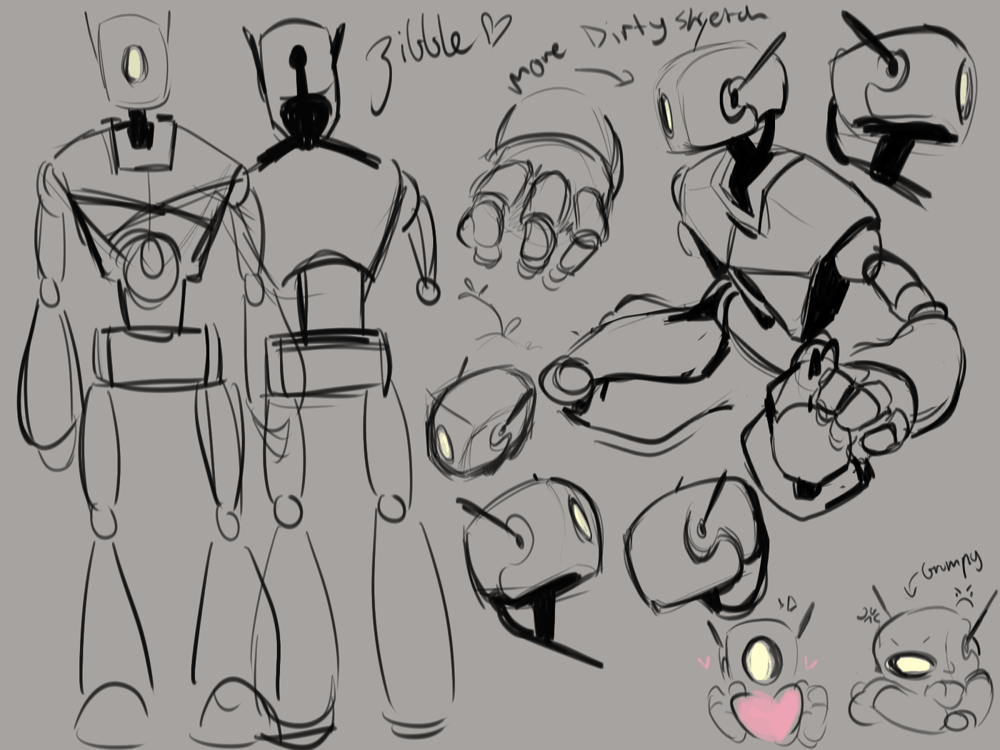
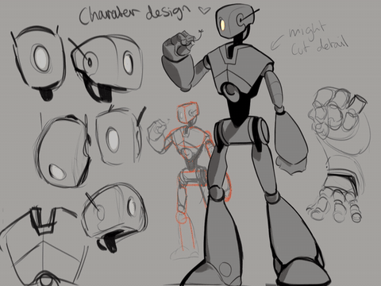
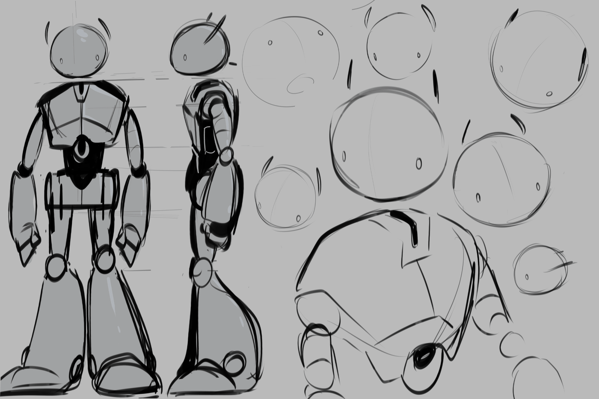

Character Design
Description: The main Character design for the robot to be completed
to be able to set up the main design.
Intention: I need the main character design so I can make steps forward toward the final product, as the character design is needed for storyboarding and the animatic.) I will also need to accumulate inspiration and reference images for character design.
I want to play around with the style.
Equipment: My drawing tablet and most likely Fire alpaca or Clip Studios
Outcome: Character design that I can use for the concept art, animation tests, Storyboarding and animatics.
-----
● INTENTION:
The Experiment is the character design for the main character (The robot) that I intend to use for the final.
I want to be able to determine the style I wish to work with (not wanting to be too cartoony, but not too heavy on detail.)
I will create an inspiration board that will include some of my inspirations and some other additions that contributed to the specific style, as well as help me determinee how I want the robot to look. Robots in particular are difficult for character design as there are many shapes and looks they can have, so many inspirations for robots specifically were needed to determine what bits and pieces I wished to work with
I will be using my Wacom 16 and trying out Clip Studios (which I'm not completely used to)
● CODES AND CONVENTIONS:
I want to play more around with shape and slightly with some color, though I will focus more on the shape and pose to determine how it shall move and look, as it will assist in animation and animation tests.
but the biggest aspect I shall work with is shape as my primary goal is shape.
● INTENDED OUTCOME & PROCESS:
I need to complete character design before I can move on to other important steps in animation.
I want to complete this in the steps of collecting additional influences and creating experimental designs, then do some simple sketches for the determined design.
Inspiration board (73 inspirations)
● INFLUENCES:


(All sourced from Pinterest, not all have sources to artists sadly.)
some credits can be found here
Process
Character design/sketches


I used Clipstudios on my Wacom 16 to draw out the design, I had a little trouble with the new software at first (mostly with brushes) But I figured out an appropriate pen to use.
When going through design, I started out with a more screen face which I changed to a single camera type eye. this allows for easier movement and less worry about the detail of an animated face.
with a single camera/eye as it posed easier turning of the head rather than the more complicated shapes.
I wanted the Robot to not be too complicated, but I did not want them to be too cartoony.
The main factors of the personality I wanted to be evident are a more friendly nature and a curious attitude.
(Named by a friend this is Zibble)
Speed draw of the character design.
(I was unable to record the first part as I forgot to hit the record)
Here is the recording of a large chunk of the work sped up.


Storyboard trials.
I did some trials by playing around with the opening section of the full thing to get a simple idea of the character.
1-2 starts with two high angle shots, typing on a computer
3-4 Medium shots of the robot having a leaf land on its hand, and turning its head to look at it.
5-6 Medium shots from the robot's point of view/perspective looking at the leaf, with confusion.
7- A close-up shot of the robot looking closely at the ' mysterious organism' (leaf)
8-9 medium long shots of the robot turning to look out, likes its wondering where it came from.
Character Redesign/sketches
After doing some animation trials in Production Experiment 2
I changed my character design after ANIMATION TEST 2 for the main reason of time efficiency due to time restraints as the new design was a lot smoother to use.
I believe that these trials were important as it allowed me to make large alterations mostly to my robot's shape/head.
I still kept the bulk of the design, as I do Favor the original design, but as said this design should be easier to work with timewise as well as allow more fluid motion. Though I intend to keep the movements more robotic, this still provides ability for that as well as looks more futuristic, which is what I want to display.

OUTCOME, REFLECTION & EVALUATION
I succeeded in creating the character design, which I did adjust at some point to better fit my animation, as it looked more 'futuristic', changing my character design after ANIMATION TEST 2 for the main reason of time efficiency due to time restraints as the new design was a lot smoother to use.
I believe that these trials were important as they allowed me to make large alterations mostly to my robot's shape/head.
I used Clip Studio Paint and Pinterest.
Collecting many Robot reference photos as well as those used in Media forms to compile and create my design, the original design looked similar to the art I completed in Media forms with a square head and screen face, which was changed to Design 1, with a more rectangular head a singular eye/screen, I was very happy with this design, until I began Production Experiment 2, where I came across a dilemma, on the movement of the head, with too much detail and a harder shape to work with, contrasting with time constraints of a timeline, so the designs head was changed into a more rounded shape, allowing for easier animation, to better fit the timeline, as well as fitting the look as more 'futuristic'.
The final design fits the narrative I wish to convey best as well as provide the best quality.
MEDIA requirements
DELETE THIS BEFORE YOU SUBMIT YOUR GOOGLE SITE
1. INTENTION (Must be written before you test any ideas):
● INTENTION:
o A written explanation of the intended experiment
o What specific skill or technique do you want to test?
o What has this experiment been influenced by? (refer to research portfolio)
o What technical equipment and software will you use? If you are using a digital SLR, for example, you might comment on how you are going to use lenses and aperture to achieve a particular look. If you are using a microphone to capture dialogue or sound effects, you might comment on how you will configure it correctly when recording these sounds.
● CODES AND CONVENTIONS:
o What codes and conventions will be manipulated and experimented
with?
o How is this test relevant to your proposed product?
● INFLUENCES:
o How does this experiment relate to your influences?
o Who or what has led you to this investigation?
o Add video/influence/image etc.
● INTENDED OUTCOME & PROCESS:
o What is your projected outcome?
o How do you propose to achieve it?
o Describe the intended media processes being applied to develop particular skills to present specific ideas and/or achieve particular effects.
Discuss research, software, techniques and skills.
● PLANNING DOCUMENTATION:
o Your production exercise must include any planning documentation, such
as scripts, shotlists and/or storyboards.
● REFERENCES:
o If you are exploring new techniques and processes in the completion of
your exercise, it might be necessary to find out further information from
manuals, books or online tutorials. In your intention, provide a
commentary on how you intend to use these resources when completing
your production exercise. Include an alphabetised list of resources at the
end of your intention.
Remember to cite each source (title, artist, link, date accessed)
PROCESS
DELETE THIS BEFORE YOU SUBMIT YOUR GOOGLE SITE
2. PROCESS:
● A written description outlining the techniques, software and equipment you are
using.
● A step by step account supported by photos and screen shots of your process.
● You should reflect and explain how the process informs your decision-making
(cause and effect). For example: When I increased the saturation by +65 I
noticed.....so I decided to decrease it to +45 because.......
Remember to cite each source (title, artist, link, date accessed)
OUTCOME, REFLECTION & EVALUATION
DELETE THIS BEFORE YOU SUBMIT YOUR GOOGLE SITE
3. OUTCOME, REFLECTION & EVALUATION (approximately one page in length):
Aim to use evaluative language in this section.
● DISCOVERIES:
o Discuss what you have discovered in undertaking the task.
o It is not sufficient to simply say you achieved your intention.
o A good evaluation will provide a detailed commentary on the aesthetic qualities, technical equipment and media processes that you explored.
● STYLE AND AESTHETIC QUALITIES:
o How well did you achieve the style or aesthetic qualities that you hoped to achieve? How will you use or modify this approach in your production?
● TECHNICAL EQUIPMENT:
o What did you learn about the operation of technical equipment? Technically, what do you need to be more aware of for the production? Are there issues you need to address before undertaking the production?
● MEDIA PROCESS:
o Do you need to modify or change your approach to media production processes? Is there a better way to go about your production? What do you need to learn more about?
● REFERENCES:
o Include any additional resources you used as an alphabetised list at the end of your outcome and reflection.
● FURTHER RESEARCH:
o If you faced difficulties in the completion of your production exercise, explain how you will address this when you complete your production. This outcome should work to inform your overall idea and aesthetic style for your product planning in Unit 3 Outcome 3 and product in Unit 4 Outcome
Remember to cite each source (title, artist, link, date accessed)